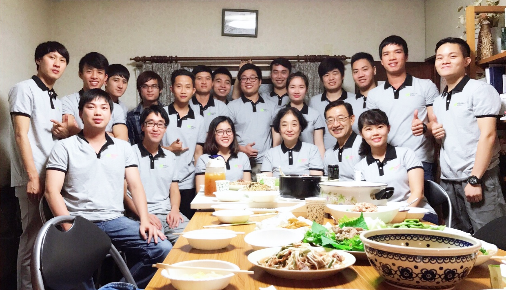
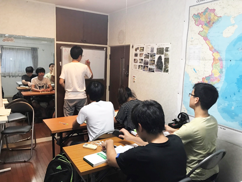
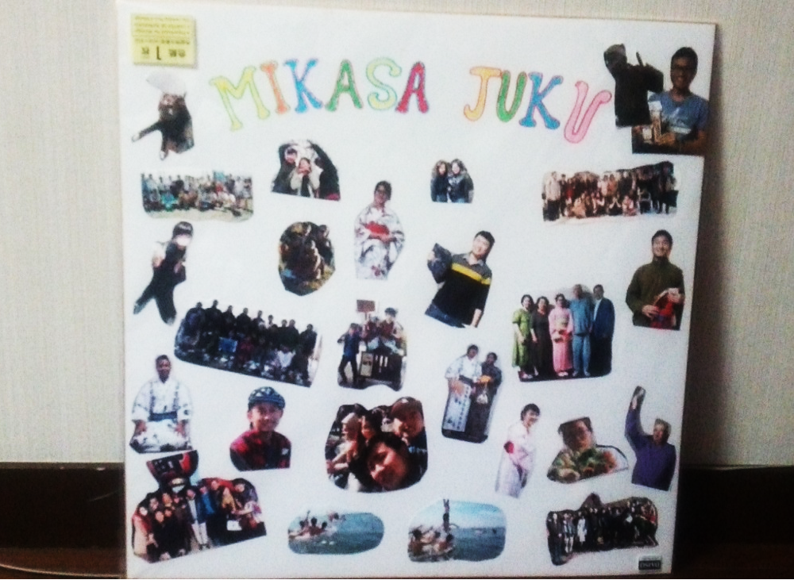
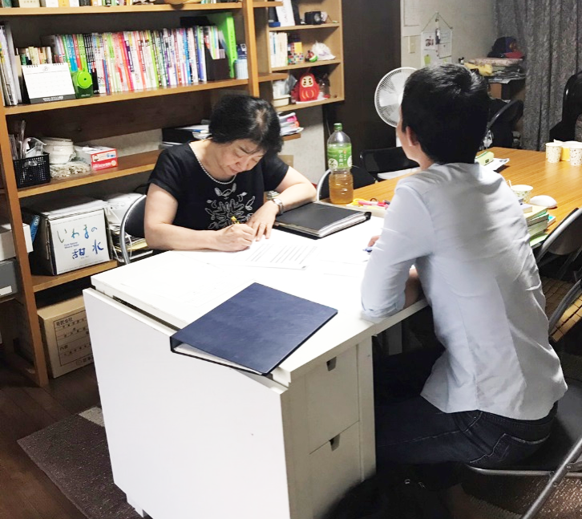
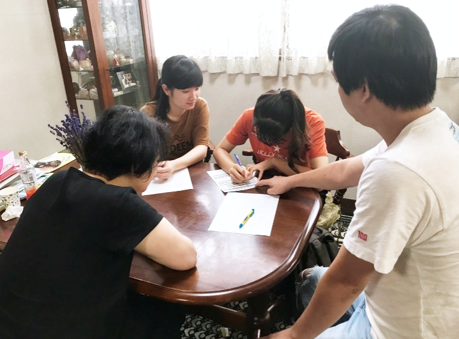
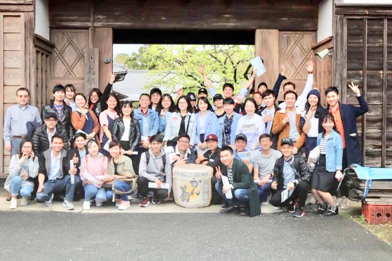
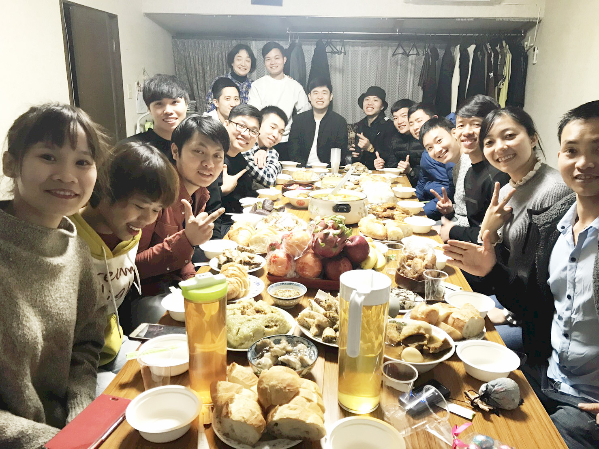
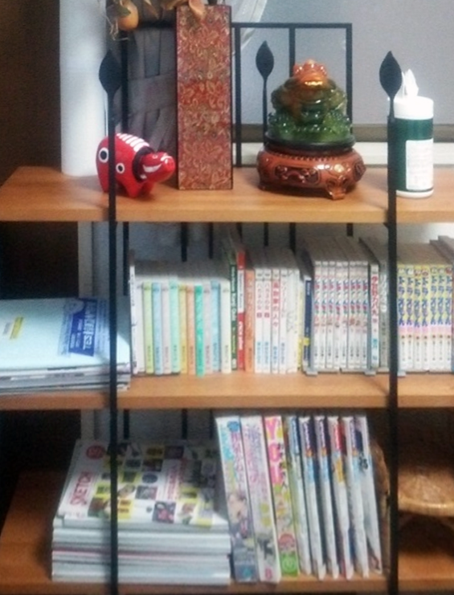

~Mikasajuku~

2017年度7月JLPT試験 成績優秀者表彰式
お揃いのTシャツに身を包み、記念撮影です。12月の試験もがんばるぞー！！

学生の学習風景
この日はN3の漢字の学習です。たくさん漢字を覚えようね！

１ 三笠塾とは？
三笠塾は2016年4月に開校した日本語並びに日本文化を学ぶためのベトナムの方を主な対象とした教育機関です。当塾は、7月および12月に行われるJLPT日本語能力試験の合格を主な目標として位置づけ、そのために必要な日本語力（聴解力、読解力、表現力、会話力など）の習得・練成はもちろん、日本の社会的知識や文化的知識の理解も目指します。
２ 三笠塾の目的
現在、日本に留学するベトナムの方の多くは、お金を稼ぐことを目的として来日している状況です。そのため、夜はずっとアルバイトをしており、昼間に日本語学校に通っても勉強せず、授業中は寝て過ごす学生が少なくありません。こういった状況では日本語ができないことは当然だと考えられます。しかし、彼らがこのような生活を続けていったら、彼らの将来はどうなるでしょうか。単調作業から将来生かせるスキルは養われるでしょうか。
この問題への対策として当塾では「日本語ができれば、将来に有益なアルバイトができる！」という考えのもと、開設時からベトナムの方への日本語能力試験合格に向けた日本語力の指導を行ってきました。
加えて、学生さん一人一人の将来における目標の実現に向けた進学相談、就職相談や日頃の生活で生じた悩みや問題へアドバイスも行っています。また、近年増加している勉強したい実習生に向けて、ベトナム帰国までにN2以上を取得することをもう一つの目的とし、実習生の参加を積極的に呼びかけています。

まず新入生は面接を受けます。
ここで将来の目標や希望進路を伝えます。

希望者には進路相談も受け付けます。
ベトナム人講師も一緒にいるので安心です。
３ 三笠塾の特色
★年に3～4回の楽しい課外活動
三笠塾では、学生が気持ちよく、持続的な通塾ができるように学生同士や学生と講師の関係性を大切にしています。その一環として、春には花見遠足、夏には海水浴、秋には紅葉狩りなどの季節ごとのイベントを積極的に行っています。
この活動の中で、学生さんは都会では体験できない日本を感じているようです。
H.30/4月 お花見 ＠千葉 房総

H.30/8月 海水浴 ＠三浦海岸

【2018年度イベント予定】
|
|
|
★日本語での自己表現の機会の充実化
三笠塾では、毎週日曜日18時～20時を「ディスカッションの時間」と位置付けています。この時間では、毎回出されたお題について学生さんが日本語で話をしています。出された意見に対して反論が出たり、そこから話が脱線したりと、とても活発な日本語の議論が展開される時間です。

ディスカッションの風景
ディスカッションの後はみんなで楽しく食事です！
★JLPT試験以外の日本語試験対策講座も開講中！
三笠塾では今秋よりBJT ビジネス日本語テスト対策の講座も開講しています。
BJTテストといえば、最近の外国人への求人、大学等の募集でもJLPTと等しく目にするようになり、特に就職を目標としている外国人の方にはとても重要度の高いテストとなっています。そんなBJTテストでより多くの留学生、実習生に高い点数を修めてもらおうという願いのもと、開講されたのが当講座です。
開講日は土日の14時~16時の限られた時間ではありますが、今後はJLPT試験対策と並ぶ、三笠塾の二大看板とすることができるよう講師一同、講座のより良い体系づくりに注力していきます。
４ JLPT試験合格実績
５ 施設紹介

★塾内文庫 小説やエッセイなどの読み物や『ドラえもん』『クレヨンしんちゃん』などの漫画本など様々なバリエーションの本が用意されています。自由に読むことができ、専用用紙に記入すれば借りることもできます。
今後も所蔵文庫のバリエーション、文庫数は随時増加していく予定です。
今後も所蔵文庫のバリエーション、文庫数は随時増加していく予定です。
★インターネット
4台のノートパソコンが用意されており、希望者にはパソコン教室も行います。塾内はWi-Fi完備なのでインターネット検索も可能です。
６ 三笠塾に参加希望の方
| ・募集定員 | ：若干名 |
| ・募集期間 | ：入塾希望者は随時受け入れます。入塾時から試験に向け、勉強します。 |
| ・修学期間 | ：4か月間 |
3月～6月（春季試験コース）
8月～11月（冬季試験コース）
注）N1合格まで修学を希望する学生は期間の延長もできます。
| ・学 費 | ：無料（参考書代は学習者によって必要となる場合もあります） |
| ・ク ラ ス | ：四種類のレベルでクラス分けを行っています |
| ① 初級レベル（N3レベル以下） | ② N3受験レベル |
| ③ N2受験レベル | ④ N1受験レベル |
７ 講師紹介
塾長 石田 陽子
講師 行事 俊明 （私立高校非常勤講師（化学）・三笠塾専任講師）
講師 ホアン ティ チョン ニアン（三笠塾専任講師）
講師 グエン ホアイ クオン （三笠塾専任講師）
講師 ド ティ タム （三笠塾専任講師）
|
三笠塾では日本語を指導してくださる協力者を求めています。 留学生に日本語を教えてみたい方は老若男女を問いません。 ご連絡をお待ちしております |
８ 三笠塾アクセス
電 車：都営地下鉄大江戸線 / 都営地下鉄丸ノ内線「中野坂上駅」より徒歩10分
⇒東京工芸大学の２号館の向かい「Mikasa ビル １F」
住 所：〒164－0012 東京都中野区本町2-8-8 三笠ビル１F
電話番号：03-6300-4471
※お電話でご連絡は以下の時間内でお願いいたします
（月 ~ 金 18:00～21:00 土・日 12:00 ～ 21:00 ）
e-mail ：
info@mikasajyuku.org (総務担当の行事までお願いいたします)
９ ベトナム人学生のお部屋探し⇒実習生を雇っている会社の方へ
ベトナム人留学生・実習生のお部屋探しをお助けします。下記へお問い合わせください。
| 名 称 | ： 三星合資会社 |
| 電 話 | ： 03-3587-2194 |
| ： ishidaw@sanseigoshi.com | |
| ： kojima@sanseigoshi.com |